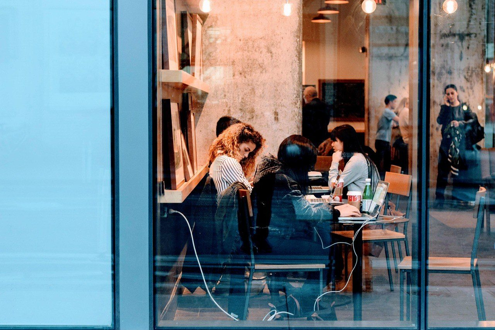
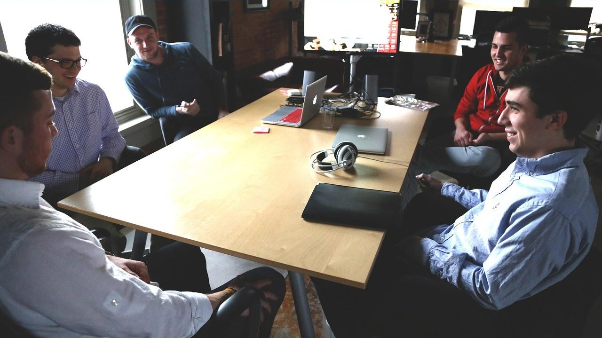

What we do
창업나침반이
하는 일
창업 준비부터 온라인 판매, 가게 운영까지. 필요한 순간에 필요한 만큼 돕습니다.
Why us
아이디어는 누구나 있습니다.
차이는 다음 한 걸음을
아는가입니다.
막막한 순간, 무엇부터 해야 할지 순서를 정리하는 것. 창업나침반은 그 순서를 함께 찾고, 실제로 움직일 때까지 곁에 있습니다.

Process
상담부터
성장까지
처음 상담부터 매출이 나기까지 보통 이 순서로 함께 갑니다.
- 상담지금 상황과 목표를 듣습니다
- 진단아이템·시장·강점을 점검합니다
- 계획사업계획과 일정을 세웁니다
- 실행오픈·지원사업·홍보를 시작합니다
- 성장매출을 보며 다음 단계로
For you
이런 분과
함께합니다
01예비 창업자아이디어는 있는데 어디서부터 시작할지 모르는 분
02온라인 판매 입문자내 상품으로 쇼핑몰을 열고 싶은 분
03소상공인 사장님매장을 넘어 판로를 넓히고 싶은 분